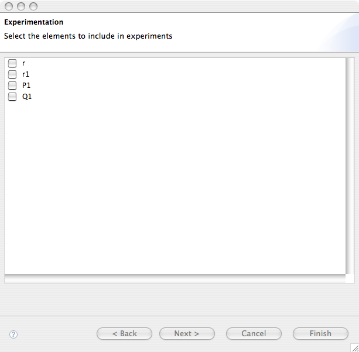
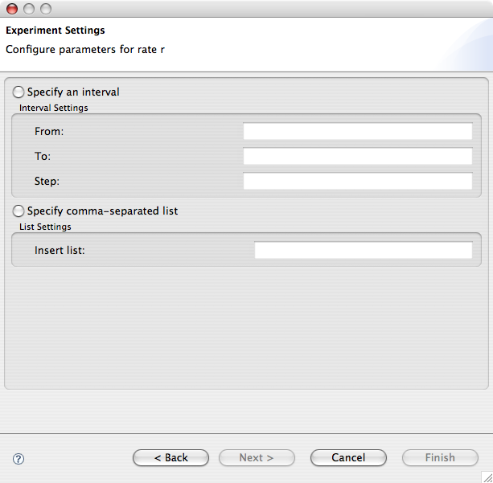
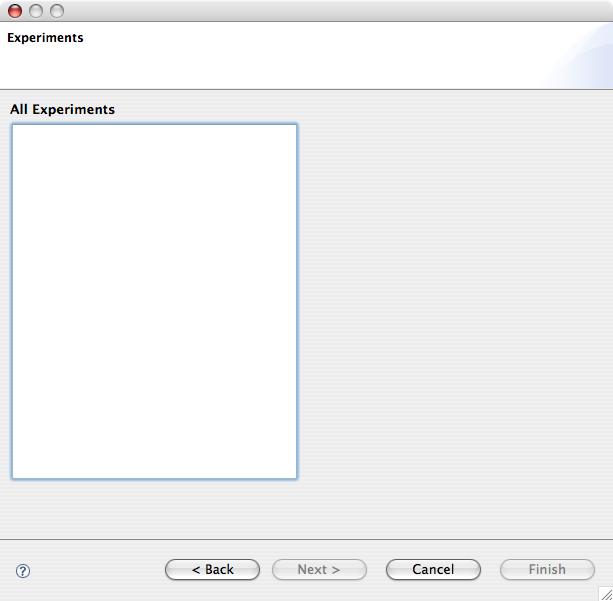
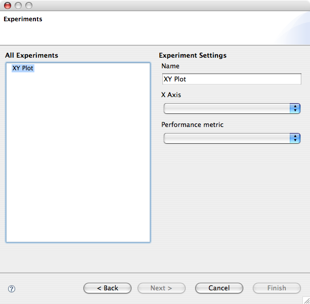
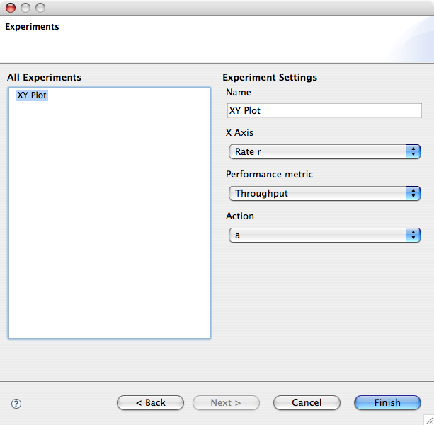
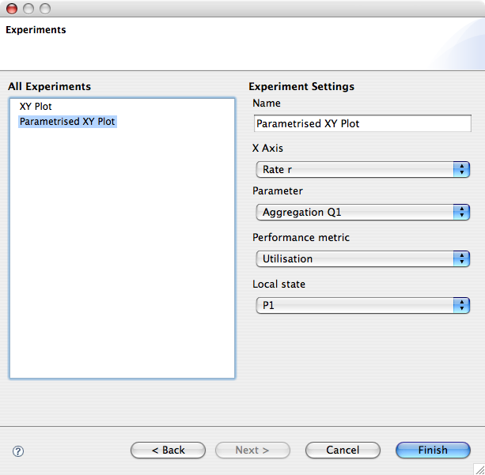

The plugin features support for experimentation, i.e. running a model with values for its parameters varying across desired ranges. The results of the experiment are plotted in the Graph View and a number of exporters is available for data serialisation.
To launch the experimentation wizard on the model of the active PEPA editor, select PEPA > CTMC > Experimentation...
The first page of the wizard lists the model parameters on which experimentation can be run. This will include the rate definitions as well as all the aggregation operators included in the model system equation.
After Next is pressed, a wizard page for each selected parameter will let the user set the desidered range to be used in the experiments. Range can be specified in two different ways. For a uniform sampling over a given interval you may want to click the Specify an interval button. Otherwise, a comma separated list of values can be directly specified if the Specify comma-separated list is pressed.
The last page of the wizard lets you create the experiments with the specified parameters. The plugin currently supports two types of experiments. A basic 2D graph plotting a performance metric against a parameter. A parametrised 2D graph plots a number of lines a performance metric against a parameter, a line for each value in the desired range of a second parameter.
The performance metrics available are: action throughput, sequential state utilisation, or steady-state probability of a subset of the state space as specified by a filter in the filter rule editor of the model.
To create a new experiment for a basic 2D graph, right click the list-box on the left of the wizard page and select New > XYPlot. The right hand side of the page will be dinamically updated with the widgetry for defining the experiment.
The name of the experiment will be shown as the title of the generated graph. The X Axis combo box lists the available model parameters and selection on the performance metric combo box will update the user interface with an additional section related to that performance metric. In the case of throughput, for example, a combo box lets the user select the action type.
To create a new experiment for a parametrised 2D graph, right click the list-box on the left of the wizard page and select New > Parametrised XYPlot. The user interface is very similar to that of the basic 2D graph, except for an additional combo box requiring the user to specify the second parameter.
To delete an experiment, right-click the experiment on the list box and select Delete
When you are done setting up the experiments, you can run them by pressing the Finish button of the wizard. The experiments will be run in the background and the results will be shown in the Graph View.